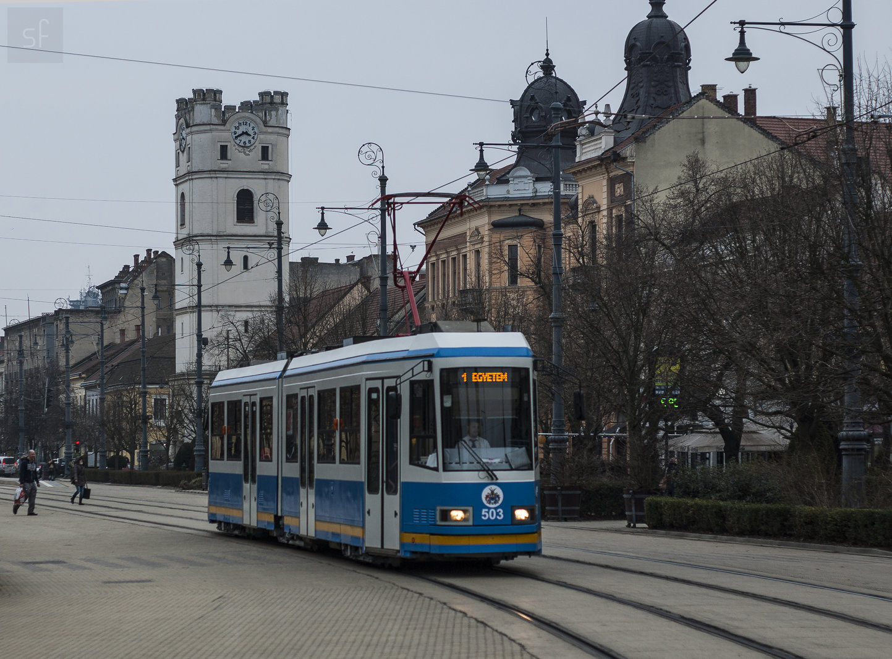
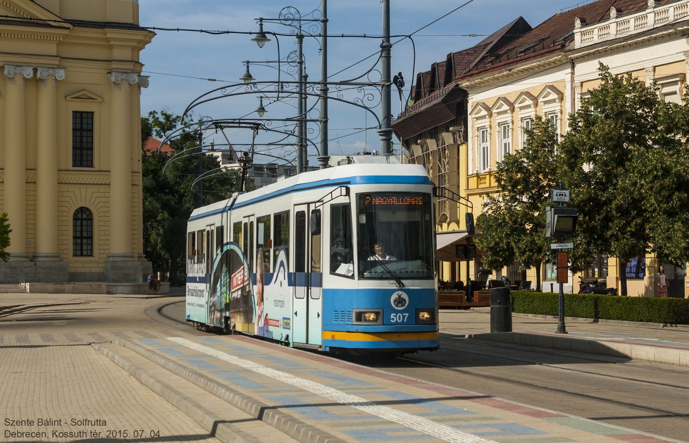
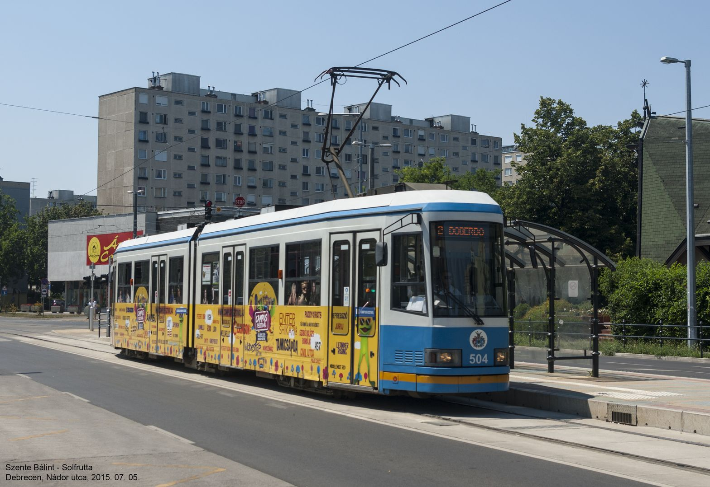
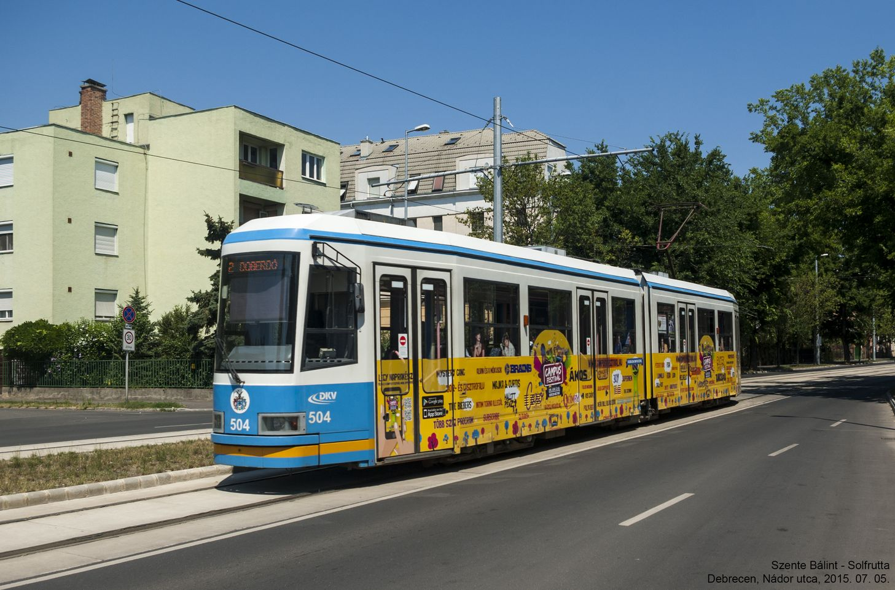

solfrutta
forever changing static
Újra forgalomban az 503-as Ganz KCSV6
Végre elkészült az 503-as pályaszámú Ganz KCSV6 villamos. A kocsi majdnem 2 éven keresztül nem volt forgalomban. Most megkapta azokat a felújításokat, amiket korábban a típus többi tagja is (502, 505), és újra forgalomba állt.
A kép dokumentum jellegu, elmászott kicsit a fókusz, manuális fókusszal nem egyszeru mozgó tárgyra loni. :)

Ganz KCSV6-ok a debreceni kettes villamoson!
Végre felújítják a debreceni 1-es villamos pályájának legelhasználódottabb pontjait. A vágányzár ideje alatt az 1-es villamosok egyáltalán nem közlekednek, helyettük pótlóbusz jár a Hunyadi János utca-Egyetem-Hunyadi János utca között, a Nagyállomás és a Hunyadi János utca között a 2-es villamosokkal lehet utazni. A vonalon - nem kis meglepetésre - a megszokott CAF-ok mellett most KCSV6-ok is közlekednek. :)



Bianchi Rekord 845
Bianchi Rekord 845 országúti ismertetõ

Felszereltség
- Vázszett: Bianchi Rekord 845, 58cm
- Hajtás: Shimano FC-6400, 52/39t; VP 115/70 monoblokk
- Lánc: Shimano CN-HG73
- Pedál: Look PP76
- Váltók: Shimano FD-1056 konzolos; Shimano RD-6402
- Fékváltókar: Shimano ST-1055
- Féktestek: Shimano BR-1055 + BR-A250
- Elsõ kerék: Shimano HB-6400 agy, Mavic CXP30, 3 kereszt, Vittoria Zaffiro Pro, fehér, 23-622
- Hátsó kerék: Shimano FH-6402 agy, Mavic CXP30, 3 kereszt, Vittoria Zaffiro Pro, fehér, 23-622
- Fogaskoszorú: Shimano 600 (HG90) 8sp 13-26
- Kormányzás: Ritchey WCS 44cm kormány, BBB A-head stucni, BBB bandázs, Shimano HP-A105 kormánycsapágy
- Nyereg: Selle Italia, Bianchi logós, fehér, Campagnolo aero nyeregcsõ
TestBike fotóalbumom a bringáról
Hauser Galaxy
Hauser Galaxy városi MTB ismertetõ
Shimano gyártási kódok
Shimano gyártási kódok
Shimano kazetta kompatibilitás
Shimano kazetta kompatibilitás
Hauser Galaxy bikecheck

Felszereltség
- Vázszett: Hauser Galaxy
- Hajtás: Shimano 300LX 48-38t
- Pedál: Wellgo platform
- Váltó: Sachs 3000, Alivio fékváltókarok
- Fék: "Hauser" V-fékek
- Elsõ kerék: Exage agy, fekete szimpla felni, 36 küllõ, Kenda 1,95" külsõ
- Hátsó kerék: Exage 7sp agy, fekete C.S. Colombo szimpla felni, 36 küllõ, Kenda 1,95" külsõ
- Fogaskoszorú: 13-28 Shimano HG, 7sp
- Kormányzás: Hauser riser, 80mm francia outi stucni
- Nyereg: Union nyereg, 25,4mm-es nyeregcsõ
TestBike fotóalbumom a bringáról
Puch Mistral Equipe városi-országúti
Felkerült nemrég elkészült új városi bringám felszereltsége. Sok újdonsága nincs, az MBK-ból épült át, gyakorlatilag csak a váz lett cserélve.

Felszereltség
- Vázszett: Puch Mistral Equipe, 58-as, pink-fekete, Made in Italy (Bianchi)
- Hajtás: Shimano FC-1050 53t, Acor monoblokk
- Pedál: Wellgo platform
- Váltó: Sachs 3000, Shimano Sport LX 7sp váltókarral
- Fék: Shimano Exage Motion féktestek, Weinmann fékkarok
- Elsõ kerék: Bees iparis agy, Mavic CXP30, 3 kereszt, Vittoria Zaffiro 23-622 fekete
- Hátsó kerék: Shimano FH-6402, Rigida DP-18, 3 kereszt, Vittoria Zaffiro 23-622 piros
- Fogaskoszorú: 13-26 Shimano HG, 7sp
- Kormányzás: francia bajuszkormány, ITM 90 mm stucni, Shimano Exage kormánycsapágy
- Nyereg: fekete Iscaselle, Selcof 26,2-es nyeregcsõvel
- Láthatóság: 2 ledes villogók, elsõ keréken 2 sárga prizma :)
TestBike fotóalbumom a bringáról
MBK Equipe
MBK Motobecane Equipe városi/túrabringa bikecheck

Felszereltség
- Vázszett: MBK Equipe cromo, 58cm, fehér (eredetileg zöld-fehér)
- Hajtás: Shimano FC-1050, 52t
- Pedál: Wellgo
- Fékrendszer: Miche Performance elöl, Shimano Exage Motion hátul, Weinmann fékkarok
- Elsõ kerék: Bees iparis agy, Mavic CXP30, 3 kereszt, Vittoria Zaffiro 23-622 fekete
- Hátsó kerék: Shimano FH-6402, Rigida DP-18, 3 kereszt, Vittoria Zaffiro 23-622 piros
- Kormányzás: francia bajuszkormány, ITM 90 mm stucni, Shimano Exage kormánycaspágy
- Nyereg: Selle San Marco Laser fehér, 25,4mm alu nyeregcsõ
- Kilométeróra:
- Láthatóság: 2 ledes villogók, elsõ keréken 2 sárga prizma :)
TestBike fotóalbumom a bringáról
Csepel vázszámok
Felraktam egy kis segítséget régebbi Csepel vázak azonosításához.
Nakita 2630s MTB
Nakita 2630s MTB ismertetõ/bikecheck

Felszereltség
- Váz: Nakita 2690s, Hi-Ten acél
- Villa: SR Suntour DuoTrack 7007, 1" nyakkal
- Hajtás: CPi trekking hajtás, 28-38-48t
- Pedál: mûanyag
- Váltók: Shimano elsõ, Shimano Acera X hátsó
- Váltókarok: SRAM gripshift
- Fékrendszer: Shimano canti kar + kanti fékek
- Kerekek: Shimano agyak, Alex felnik
- Fogaskoszorú: 13-32 Shimano HG, 7 seb.
- Kormányzás: Nakita logós acél, egyszerû 1" monti stucni
- Nyereg: Union, 26,0x400-as gyári csõvel
TestBike fotóalbumom a bringáról
KTM Strada CX fixi
KTM Strada CX fixi ismertetõ/bikecheck

Felszereltség
- Vázszett: KTM Strada CX, gyöngyházfehér-piros, 58 cm
- Hajtás: THUN hajtókar 42t, középrész
- Pedál: alu-acél Wellgo pedál, Marikoo mûanyag klipsz
- Elsõ fék: Miche Performance, Shimano canti karral
- Elsõ kerék: Acor piros agy, Csepel Ringo fehér felni, 3 kereszt, Vittoria Zaffiro 23-622, fekete
- Hátsó kerék: Acor piros agy, 18t cog, Csepel Ringo fehér felni, 3 kereszt, Schwalbe Lugano 23-622, fekete
- Kormány: vágott fehér acélkormány, 41 cm, ITM 90 mm stucni, BBB bandázs
- Nyereg: Selle SanMarco Laser, fehér
- Láthatóság: elöl-hátul egyledes villogók
TestBike fotóalbumom a bringáról
KTM Strada CX országúti
KTM Strada CX országúti ismertetõ/bikecheck

Felszereltség
- Vázszett: KTM Strada CX, gyöngyházfehér-piros, 58 cm
- Hajtás: Shimano FC-1055, 52/42t; Acor monoblokk
- Pedál: Shimano PD-1055, fehér szíjjal, felemás klipszszel:)
- Váltó: Shimano FD-1056, Shimano RD-1056
- Fékváltókar: Shimano ST-1055
- Féktestek: Shimano BR-1055
- Elsõ kerék: Shimano HB-1055 agy, Wolber GTX2 felni, radiál fûzés, piros anyák, Vittoria Zaffiro 23-622, piros
- Hátsó kerék: Shimano FH-1055 agy, Wolber GTX2 felni, radiál + 3 kereszt fûzés, piros anyák, Vittoria Zaffiro 23-622, piros
- Fogaskoszorú: 12-28 Shimano HG, 7s
- Kormány: ITM Mod. Mondial, 42 cm kormány, ITM 90 mm stucni, BBB bandázs
- Nyereg: Selle San Marco Laser, fehér
TestBike fotóalbumom a bringáról
KTM Formula
Már egész kisgyerek korom óta bringázok. Volt háromkerekû elsõ kerék hajtásos kis bringám (fixi! :D), pótkerekes racsnis kétkerekû, aztán kontrás, 20” kerekû monti, meg rózsaszín BMX. Ezt követték a 24-esek, egy egész korrekt német monti, meg egy klasszikus nõi vázas. Ezután volt még egy 26" kerekû "teszkómontim" - ez vezetett ahhoz, hogy nagyon vágytam egy normális bringára...
Na de milyen is legyen az a normális bringa? Ekkor már volt a családban több, azóta is jól teljesítõ, nem túl drága, de értékelhetõ minõségû gyári monti. Legyen monti? Valahogy sosem tetszett igazán ez a kategória. Fõleg, mivel 90%-ban aszfalton használom a bringáimat (és ez azóta se változott), ezt hamar elvetettem. Klasszikus „tanyabájk”, meg ilyesmi fel se merült alternatívaként… A példa adott: édesapám már a ’80-as évek vége óta egy Csepel Maraton Sztárt hajt (meg hát édesanyám Csepel Lady mixte-csodája is egyféle országúti), ami mindig is tetszett, miért ne lehetne nekem is ilyesmim? 2010 tavaszára már megérett az elhatározás: országúti bringa kell!
Mivel akkor még nem voltam túlságosan benne a dologban, nem ismertem a bringás apróhirdetés-oldalakat. Akkor mégis honnan lesz nekem országútim? Itt jött képbe haver: rendszeresen jártak Berhidára a lomisokhoz, ott vette magának ezt a KTM Formulát. A bringa alapvetõen jó állapotban volt, csak neki nagy volt a váz, így megvettem tõle 2010 tavaszán…
A bringa nagyrészt gyári állapotban, apróbb hiányosságokkal került haverhoz: hiányzott róla a lánc, illetve az elsõ fék (érdekes mód ennek a bowdenje megvolt!). Ezt leszámítva komplett, jó állapotú volt minden rajta. A váz 58-as, érdekes kékes színû, Columbus csövekbõl készült félverseny. A kerekek Van Schothorst krómozott, rozsdamentes acélfelnikbe DT küllõkkel fûzött Shimano alumínium agyakból álltak, ezeken jó állapotú 28-622-es Vittoria Zaffiro gumik. A hátsó fék, fékkarok, és a rozsdamentes króm sárvédõk a Weinmann gyárából kerültek ki. A hajtás Shimano Front Freewheeling System, a hozzá való fogaskoszorúval. Elöl Shimano FE, hátul egy Shimano Tourney váltó figyelt a gyári Positron helyett.
Az elsõ féket pótoltam elõször, egy szemétbõl túrt Rasant (NDK gyártmány) fékkel, majd a hátsó, gyári Weinmann Symetric csavarjának sikeres eltörése után ide egy Altenburger kétforgós került fel. Késõbb elkezdtem a gyári alkatrészek beszerzését: ez egy pár Weinmann Symetric féket, és egy Shimano Positron FH hátsó váltó felszerelését jelentette.
Hát igen... ennek a bringának az lett a végzete nálam, hogy fejleszteni akartam, de összességében jobban megérte egy teljesen új gépet építeni, így 2012 áprilisában kompletten túladtam rajta. Összességében egy kellemes bringa volt, szerettem hajtani, minden fogyatékossága ellenére is. Ha egy mondatban kéne róla nyilatkoznom: Ismeretlen évjáratú KTM Formula, nagyrészt gyári felszereléssel. Kiváló túragép.
{kind=link}
{kind=link}
{kind=link}
Felszereltség (eladás elõtti)
- Váz: KTM Formula, Columbus csöves (Carbon-Manganese), zöldeskék-metál, 58 cm
- Villa: KTM Formula, Columbus csöves, zöldeskék-metál
- Hajtómu: Shimano FF System, 52T/42T
- Középrész: Shimano FF System, OCTAJoint tengely
- Pedál: nincs
- Elso váltó: Shimano FE
- Hátsó váltó: Shimano Positron FH
- Váltókar: Shimano Positron
- Fékkarok: Weinmann
- Fékek: Weinmann Symetric
- Elso kerék: Shimano agy, Van Schothorst acél felni, 36 DT küllo 3 keresztre fuzve
- Gumik: Vittoria Zaffiro 28-622, fekete
- Hátsó kerék: menetes Shimano agy, Van Schothorst acél felni, 36 DT küllo 3 keresztre fuzve
- Kormány: alu, 42 cm
- Stucni: SR 50 mm, alu
- Bandázs: Ambrosio mubor, fekete
- Nyereg: KTM feliratos, kék Selle San Marco Concor
- Nyeregcso: alu
- Láthatóság: külloprizmák
TestBike fotóalbumom a bringáról
Gumiméretek
Az oldalt kibovítettem egy, a gumi és felniméreteket taglaló oldal kezdeményével. Ez is, mint minden más, idovel (jó sok idovel... :)) bovülni fog az oldalon.
Gumi-felni párosítás
| 18 | 20 | 23 | 25 | 28 | 32 | 35 | 37 | 40 | 44 | 47 | 50 | 54 | 57 | |
| 13 | O | O | O | O | - | ! | x | x | x | x | x | x | x | x |
| 15 | x | - | O | O | O | O | - | x | x | x | x | x | x | x |
| 17 | x | x | - | O | O | O | O | O | - | x | x | x | x | x |
| 19 | x | x | x | - | O | O | O | O | O | O | - | x | x | x |
| 21 | x | x | x | x | x | - | O | O | O | O | O | O | - | x |
| 23 | x | x | x | x | x | x | x | - | O | O | O | O | - | x |
| 25 | x | x | x | x | x | x | x | x | - | O | O | O | O | O |
O: ajánlott -: megfelelõ !: különleges figyelem meleltt x: nem megfelelõ